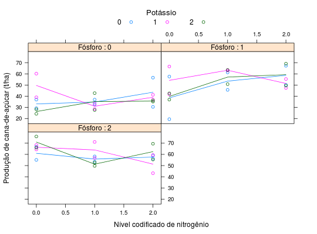

Experimento fatorial, de 3\(^{3}\), de adubação de cana com NPK, feito por Strauss (1951), com confundimento (grupo W) de dois graus de liberdade da interação tripla N \(\times\) P \(\times\) K. Foi usado o confundimento correspondente aos blocos, e foram feitas duas repetições para os 27 tratamentos.
Um data.frame com 54 observações e 6 variáveis, em que
blocoreptNPKprodPIMENTEL-GOMES (2009), Tabela 7.6.1, pág. 126.
Straus, F. Esperimentos de adubação na zona canavieira de Pernambuco. In: Terceira Reunião Brasileira de Ciência do Solo. Anais... t.1 p.336-443, 1951.
Foi constatado que o livro tem um erro de tipografia na tabela com os dados pois no bloco W1 existem duas ocorrências do tratamento 202 sendo que a última deveria ser 220. Foi feita a inclusão desses dados no pacote com essa correção.
library(lattice) data(PimentelTb7.6.1)#> Warning: data set ‘PimentelTb7.6.1’ not foundstr(PimentelTb7.6.1)#> 'data.frame': 54 obs. of 6 variables: #> $ bloco: Factor w/ 3 levels "1","2","3": 1 1 1 1 1 1 1 1 1 1 ... #> $ rept : num 1 1 1 1 1 1 1 1 1 2 ... #> $ N : num 0 0 0 1 1 1 2 2 2 0 ... #> $ P : num 0 1 2 0 1 2 0 1 2 0 ... #> $ K : num 0 2 1 1 0 2 2 1 0 0 ... #> $ prod : num 37 42.6 68.4 33.5 45.7 49.7 36.2 47.4 59 29.3 ...xtabs(~N + P + K, data = PimentelTb7.6.1)#> , , K = 0 #> #> P #> N 0 1 2 #> 0 2 2 2 #> 1 2 2 2 #> 2 2 2 2 #> #> , , K = 1 #> #> P #> N 0 1 2 #> 0 2 2 2 #> 1 2 2 2 #> 2 2 2 2 #> #> , , K = 2 #> #> P #> N 0 1 2 #> 0 2 2 2 #> 1 2 2 2 #> 2 2 2 2 #>xyplot(prod ~ N | factor(P), groups = K, data = PimentelTb7.6.1, type = c("p", "a"), as.table = TRUE, xlab = "Nível codificado de nitrogênio", ylab = "Produção de cana-de-açúcar (t/ha)", auto.key = list(title = "Potássio", cex.title = 1.1, columns = 3), strip = strip.custom(strip.names = TRUE, var.name = "Fósforo"))